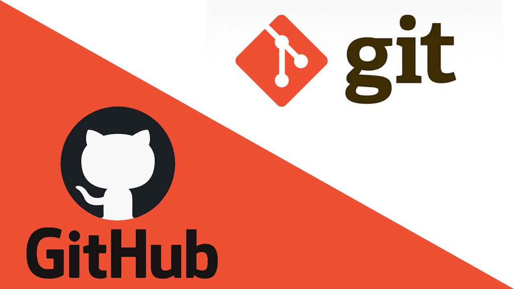

¿Qué es Git?
Git es un software de control de versiones diseñado por Linus Torvalds, pensando en la eficiencia, la confiabilidad y compatibilidad del mantenimiento de versiones de aplicaciones cuando estas tienen un gran número de archivos de código fuente. Su propósito es llevar registro de los cambios en archivos de computadora incluyendo coordinar el trabajo que varias personas realizan sobre archivos compartidos en un repositorio de código.
Init
El comando git init crea un nuevo repositorio de Git. Puede utilizarse para convertir un proyecto existente y sin versión en un repositorio de Git, o para inicializar un nuevo repositorio vacío.
Status
El comando de git status nos da toda la información necesaria sobre la rama actual.
Branch
El comando git branch te permite crear, enumerar y eliminar ramas, así como cambiar su nombre pero no te permite cambiar entre ramas o volver a unir un historial bifurcado.
Checkout
En términos de Git, "checkout" (extraer) es el acto de cambiar entre diferentes versiones de una entidad objetivo. El comando git checkout opera sobre tres entidades distintas: archivos, confirmaciones y ramas.
Remote
El comando git remote es una parte de un sistema más amplio que se encarga de sincronizar los cambios. Los registros inscritos mediante el comando git remote se utilizan junto con los comandos git fetch, git push y git pull.
Pull
git pull es el comando que comprueba si hay cambios en el repositorio remoto y, en caso de que los haya, se trae esos archivos a tu repositorio local y actualiza tu espacio de trabajo
Push
El comando git push se usa para cargar contenido del repositorio local a un repositorio remoto. El envío es la forma de transferir confirmaciones desde tu repositorio local a un repositorio remoto.
Clone
El comando git push se usa para cargar contenido del repositorio local a un repositorio remoto. El envío es la forma de transferir confirmaciones desde tu repositorio local a un repositorio remoto.
Commit
El comando git commit captura una instantánea de los cambios preparados en ese momento del proyecto. Las instantáneas confirmadas pueden considerarse como versiones "seguras" de un proyecto: Git no las cambiará nunca a no ser que se lo pidas expresamente.
